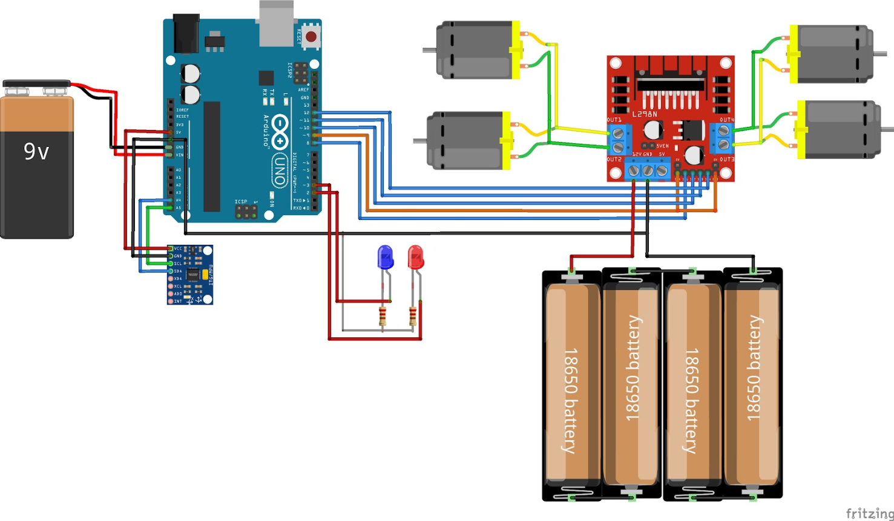
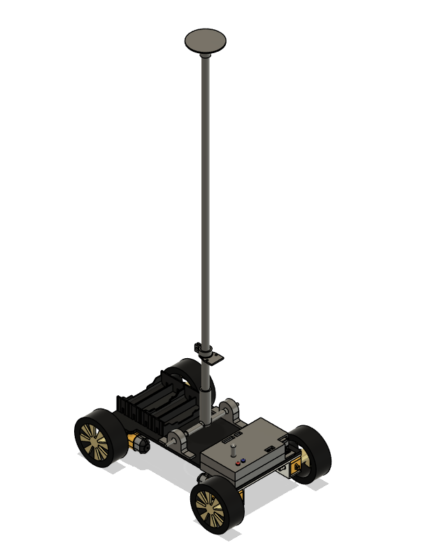
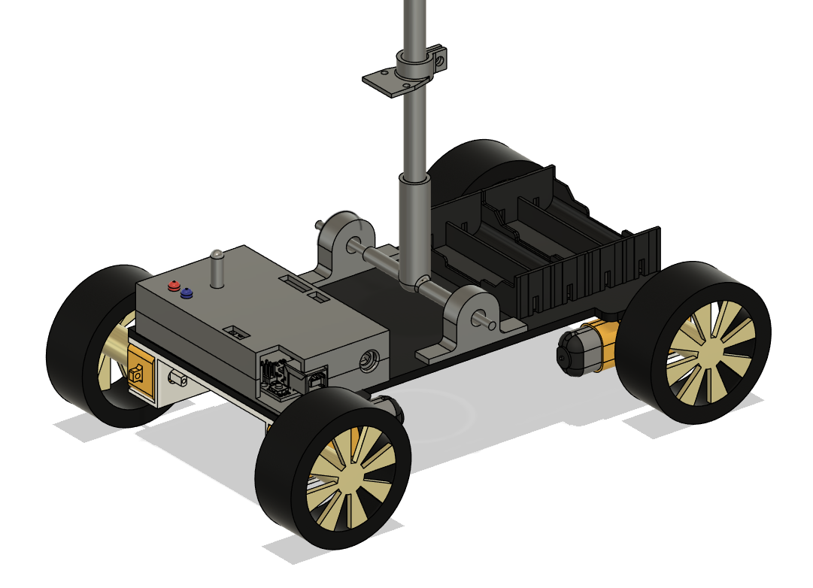
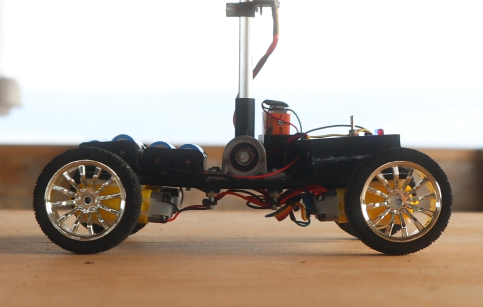

Inverted Pendulum (Self-Adjusting Setpoint PID Control)
December 2024 • Completed
Project Overview
Getting an inverted pendulum to balance autonomously is a significant engineering feat in itself due to its inherent dynamic instability. To achieve this, our team implemented a highly robust control architecture that combines a traditional Proportional-Integral-Derivative (PID) controller with a novel Self-Adjusting Setpoint System (SASS).
Instead of relying on highly complex or computationally heavy algorithms, the SASS dynamically shifts the pendulum's precise equilibrium point in real-time to counteract external disturbances. This approach allows the system to effortlessly maintain its balance against load variations and uneven surfaces—something a standard fixed-gain PID controller struggles to achieve. The concept of dynamically altering reference setpoints (conceptually similar to Command Governors or Reference Governors in advanced control theory) proves that highly robust stabilization can be achieved elegantly and efficiently on low-cost hardware.
Hardware & Materials Stack
- Microcontroller: Arduino Uno
- Sensor: MPU6050 Inertial Measurement Unit (IMU)
- Actuators: 4x Direct Current (DC) Motors
- Motor Driver: L298N Dual H-Bridge Motor Driver
- Chassis: Custom 3D-printed parts combined with lightweight metals/strong plastics
- Pendulum: Light curtain rod with a ball bearing for smooth rotation and a custom 3D-printed holder

Development Rundown
System Design & Hardware Integration
The physical prototype was constructed using a cart driven by four DC motors. The MPU6050 sensor was installed at the pendulum's base, utilizing a Complementary Filter to guarantee highly accurate, zero-drift angle feedback. Cable management was prioritized by concealing connections within the cart base for a clean aesthetic and safe operation.
Control System Implementation
The Arduino Uno served as the system's core, executing the SASS-PID algorithm. The microcontroller continuously processed angle and acceleration data to compute the required corrective forces, outputting PWM signals to the L298N driver to dynamically move the cart and maintain the pendulum's upright equilibrium.



Challenges & Future Implementations
Challenges Faced: The primary challenge of the inverted pendulum is its inherent dynamic instability. The system requires continuous, millisecond-level precision in sensing, state estimation, and actuation. We found that standard fixed-gain PID controllers quickly failed when subjected to persistent environmental disturbances (like slopes or asymmetrical loads). Furthermore, achieving robust adaptive control on a computationally limited, low-cost embedded device like the Arduino required highly optimized logic to prevent processing delays.
Future Implementations: While the SASS-PID method proved incredibly robust for its low computational cost, future iterations of this hardware platform could be used to implement and test more advanced, model-based controllers (such as LQR or Fuzzy Logic Control) to further bridge the gap between theoretical adaptive control and practical embedded systems.
